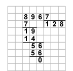
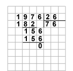
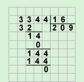
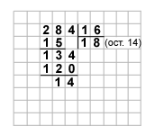
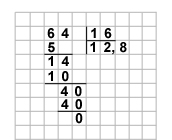

Деление – действие, обратное умножению, с его помощью по произведению и одному из множителей находится второй множитель.
Разделить число а на число b – это значит найти такое число, которое при умножении на число b дает число а:
а : b = с, если с · b = а.
Число а называется делимым, b – делителем, с – частным.
Если известный и искомый множители - натуральные однозначные числа, то неизвестный множитель находится по таблице умножения.
Деление натурального многозначного числа на натуральное однозначное число выполняется поразрядно, начиная со старшего разряда.
Если в старшем разряде делимого стоит число меньшее, чем делитель, то единицы старшего разряда переводятся в единицы соседнего младшего разряда и деление начинается с этого разряда.
Например, 896 разделим на 7.
8 сотен делим на 7, получаем 1 сотню и одна сотня осталась.
Переводим оставшуюся сотню в десятки, добавляем 9 десятков из разряда десятков, получаем 19 десятков.
19 десятков делим на 7, получаем 2 десятка, 5 десятков остается.
Переводим оставшиеся десятки в единицы, получаем 50 единиц, добавляем 6 единиц из разряда единиц, получаем 56 единиц.
56 единиц делим на 7, получаем 8 единиц.
Значит, 896 : 7 = 128.
Обычно процесс деления записывают в «столбик».

Деление на натуральное многозначное число производится аналогично. При этом, в первое «промежуточное» делимое включается столько старших разрядов, чтобы оно получилось больше делителя.
Например, 1976 разделим на 26.
Число 1 в старшем разряде меньше 26, поэтому рассмотрим число, составленное из цифр двух старших разрядов – 19.
Число 19 также меньше 26, поэтому рассмотрим число, составленное из цифр трех старших разрядов – 197.
Число 197 больше 26, делим 197 десятков на 26:
197 : 26 = 7 (15 десятков осталось).
Переводим 15 десятков в единицы, добавляем 6 единиц из разряда единиц, получаем 156.
156 делим на 26, получаем 6.
Значит, 1976 : 26 = 76.

Если на каком-то шаге деления «промежуточное» делимое оказалось меньше делителя, то в частном записывается 0, а число из данного разряда переводится в следующий, более младший разряд.
Пример: 3344 : 16 = 209.

Деление натуральных чисел нацело (без остатка) не всегда выполнимо. Например, нельзя разделить 45 на 8, так как нет такого натурального числа, которое при умножении на 8 давало бы 45.
В таких случаях рассматривают деление с остатком.
Деление с остатком
Если нельзя произвести деление натуральных чисел нацело, то выполняют деление с остатком. При этом действии ищут наибольшее натуральное число, которое при умножении на делитель дает число, меньше делимого.
а : b = с (ост. d), где с и d такие, что с · b + d = а, d < b.
Деление многозначных натуральных чисел выполняется в «столбик», остаток записывается после частного в скобках.

284 : 15 = 18 (ост. 14).
Деление с десятичной дробью в частном
Если натуральное число не делится нацело на однозначное натуральное число, можно продолжить поразрядное деление и получить в частном десятичную дробь.
Например, 64 разделим на 5.
6 десятков делим на 5, получаем 1 десяток и 1 десяток в остатке.
Оставшийся десяток переводим в единицы, добавляем 4 из разряда единиц, получаем 14.
14 единиц делим на 5, получаем 2 единицы и 4 единицы в остатке.
4 единицы переводим в десятые, получаем 40 десятых.
40 десятых делим на 5, получаем 8 десятых.
Значит, 64 : 5 = 12,8

Таким образом, если при делении натурального числа на натуральное однозначное или многозначное число получается остаток, то можно поставить в частном запятую, остаток перевести в единицы следующего, меньшего разряда и продолжать деление.